Prueben Radal como corredores: qué hay, por qué está así y qué mirar
Esta guía es para el equipo que conoce el negocio. No necesitan saber de software: necesitamos su ojo de corredor. Queremos saber si la IA lee bien los PDF, si los números cuadran, si el vocabulario es el de ustedes y si los flujos calzan con cómo trabajan.
Es un ambiente de prueba compartido. Varias personas prueban a la vez con los mismos usuarios y los mismos datos ficticios. Los números pueden cambiar mientras pruebas porque otra persona registró un pago o subió una póliza. Nada de lo que hagas aquí llega a clientes ni a compañías reales.
Qué trae esta versión
v12: pólizas primero y cobranza
Pólizas es la lista principal. Hay viajes parciales: se puede partir desde la póliza, desde cotizaciones o desde cero, y las etapas que no ocurrieron se marcan omitida. La cobranza tiene tres niveles por cuota. Hay links públicos para el asegurado y la compañía, y una campana con Por hacer y Para saber.
El copiloto es el inicio
Al entrar abre el Agente. Muestra tus números del día, cada uno con un link a la lista que lo explica, y te ofrece consultas frecuentes. Las conversaciones quedan guardadas en una barra lateral. El agente prepara las acciones y nada se escribe hasta que tú confirmas.
Lectura rápida con IA
Una póliza se lee en dos tiempos. Primero los datos principales (asegurado, vigencia, prima y cuotas), en unos 10 a 20 segundos. Después, en segundo plano, los Datos técnicos: coberturas, deducibles, garantías, exclusiones y cláusulas. Las cotizaciones también se leen por partes, en paralelo.
Incluye además las correcciones de las rondas de revisión 2 y 3 del 19-10-2026. Lo corregido y lo pendiente aparece en Problemas ya conocidos.
02Cómo entrar
Entra a https://dev.radalseguros.cl. Todos los usuarios usan la contraseña radal1234. Son usuarios de prueba compartidos de un ambiente que no es productivo.
| Correo | Quién es | Qué ve | Úsalo para |
|---|---|---|---|
admin@demo.cl | Carolina Rojas, administradora de la corredora Corredora Demo SpA (en pantalla, “Demo Corredores”) | Toda la corredora. En la campana elige Mías / Todas. Tiene Configuración. | La mayoría de los escenarios: pólizas, cobranza, comparación, agente y configuración. |
ejecutivo@demo.cl | Matías Fuentes, ejecutivo de cuentas y dueño de las cuentas demo | El copiloto le muestra “Mis números”. Recibe los Por hacer de sus cuentas. No tiene Configuración. | Ver la app como la ve el ejecutivo: filtro Mías, sus tareas y lo que llega desde los links públicos. |
admin@radal.cl | Equipo Radal (plataforma) | Sólo el Mantenedor: compañías y cobro, cuentas de proveedor, eventos y tareas programadas. | Ver qué configura Radal por compañía. No ve datos de ninguna corredora. |
Links públicos (sin usuario)
El asegurado y la compañía no tienen usuario en Radal. Responden por un link que el corredor les comparte, por ejemplo por WhatsApp. Ábrelos en una ventana privada para verlos como los vería el asegurado o la compañía: Ctrl/Cmd + Shift + N en Chrome y Safari, Ctrl/Cmd + Shift + P en Firefox.
| Para | Link | Qué muestra |
|---|---|---|
| Asegurado | /s/HsWb9LqBbq8dlKkD7GTvH2GqR8KvOYKq | Transportes del Sur SpA · póliza HDI-VL-778812 (HDI): cuotas, cómo pagar y subir un comprobante. |
| Compañía | /s/HC1KFTUmVwzZYXHxuUuSkSiemayTeVC_ | Consulta de estado de pago INQ-LOJM4N · póliza 5520-0001 (Sura). |
| Compañía | /s/qZJgVZhu_w_OHYBU5ovHELwVF5H7be22 | Sura · póliza 5520-0001: informar el estado de cada cuota. |
Desde el panel de una cuota (Compartir) puedes crear links nuevos para tus propias pruebas.
Reglas del ambiente
Para no pisarse entre ustedes
- Todo lo que crees debe partir con el prefijo “QA ” y tus iniciales, por ejemplo QA MR Ferretería. Así se encuentra y se limpia fácil.
- No cambies las contraseñas de los usuarios compartidos.
- En Configuración → Cobranza no cambies la cadencia ni las tolerancias sin avisar, porque afectan a todos.
- No invites correos reales en Equipo y roles. Usa direcciones
@example.com.
Lo que es así a propósito
- Los datos son ficticios: corredora, asegurados, pólizas y montos de demostración.
- En dev, el correo sólo llega a direcciones @radalseguros.cl. Un recordatorio a otra dirección queda registrado como omitido, y eso no es un error.
- La IA de este ambiente es lenta. Más adelante habrá un proveedor más rápido. Si algo tarda pero termina bien, no es un error. Sí repórtalo si pasa de 2 minutos, si se queda pegado o si se pierde el resultado.
- Si una página carga a medias o muestra un error
429, recarga una vez y anota la hora.
03Por qué la app está construida así
Ustedes conocen la especificación RADAL, clic a clic · v15. Cada tarjeta explica una decisión: qué ves, por qué se hizo así, qué dice la especificación y si la versión la sigue o se desvía. Si una desviación no les hace sentido como corredores, ese es justamente el feedback que buscamos. Repórtenlo como Pregunta de negocio.
1 · El copiloto es la pantalla de inicio
Se desvía- Qué ves
- Al entrar se abre Agente con un saludo y cinco indicadores: cuotas vencidas, pagos por confirmar, pendientes por revisar, pólizas que vencen en 30 días y pólizas vigentes. Cada indicador abre la lista que lo explica. Debajo aparecen consultas frecuentes como Revisar cuotas vencidas, Confirmar pagos informados, Archivos faltantes o Consultar estado a las compañías. Tus conversaciones quedan guardadas a la izquierda; puedes buscarlas, renombrarlas, archivarlas y restaurarlas.
- Por qué
- La decisión fue que el corredor parta el día preguntando y resolviendo, no mirando un tablero. El administrador ve “Toda la corredora” y el ejecutivo ve “Mis números”. Cada número sale del mismo cálculo que la lista a la que lleva.
- Especificación
- La pantalla de inicio es el Dashboard: Comisión del mes (estimada) contra la meta y ocho tarjetas, cada una con el mismo número que la lista filtrada que abre. Pantallas y reglas › Dashboard · Plan de construcción › P1 #10.
- Sigue / desvía
- Sigue la regla de que cada número abre su lista con el mismo dato. Se desvía en el inicio, que es el copiloto y no el Dashboard, y en que la comisión del mes contra la meta no está en esta versión.
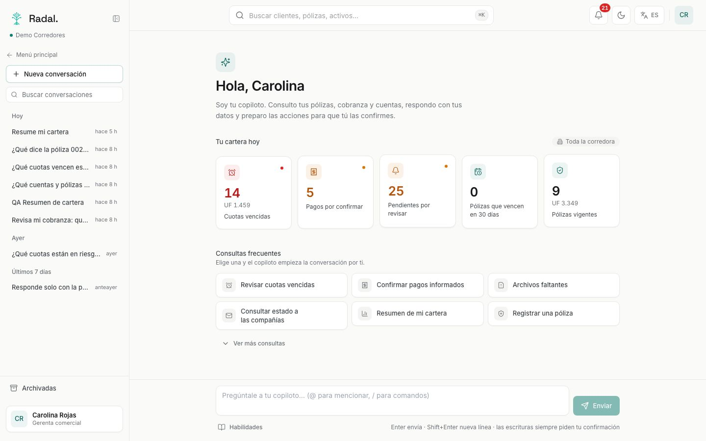
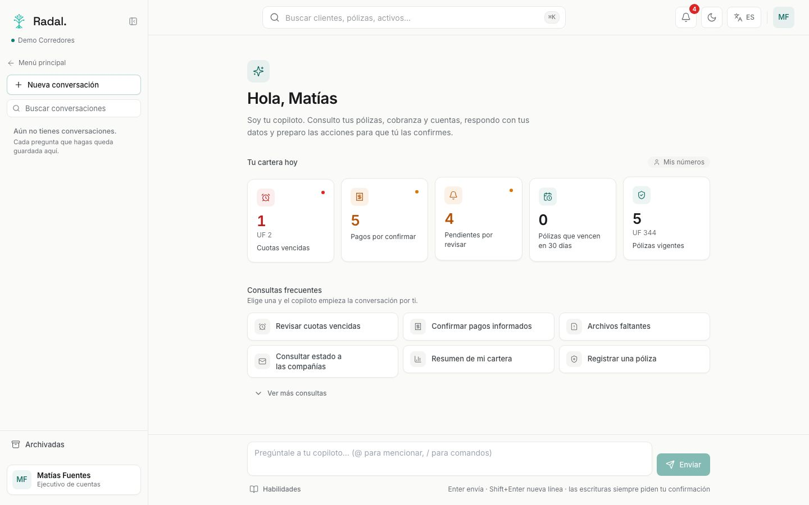
2 · Pólizas como lista principal
Se desvía en parte- Qué ves
- Pólizas aparece en el menú, con tarjetas de vigentes, prima vigente, cuotas vencidas, sin plan de pago, sin respaldo y vencen en 90 días. Cada tarjeta filtra la lista. Arriba están Subir póliza (el PDF) y Registrar a mano. La ficha muestra Falta, partes, cobranza, viaje, datos técnicos, prima y el contenido extraído.
- Por qué
- La mayoría de los corredores ya tiene la póliza emitida. Por eso se parte desde ahí y no desde el proceso completo. La ficha muestra la aritmética de la prima tal como la pide la regla: neta = afecta + exenta, IVA = 19 % de la afecta (no de la neta) y bruta = neta + IVA.
- Especificación
- El menú es Dashboard · Portafolio · Cobranza · Agentes IA · Configuración, y Pólizas es una pestaña del Portafolio. La ficha va en el orden cabecera → “Falta: X” → bloques → bitácora. Pantallas y reglas · Pólizas · R9 y R38 en Estructura de datos › Reglas que no se rompen.
- Sigue / desvía
- Sigue en la ficha (“Falta: X” con Completar, sin pop-ups, R38). En la prima, la ficha avisa si no cuadra (R9). Se desvía en dos puntos. Primero, el menú: Pólizas está en el menú, junto a Asegurados y Portafolio, y no hay un botón único + Nuevo. Segundo, en Registrar a mano una prima bruta que no cuadra con neta + IVA no deja guardar, mientras que R9 pide advertir sin bloquear.
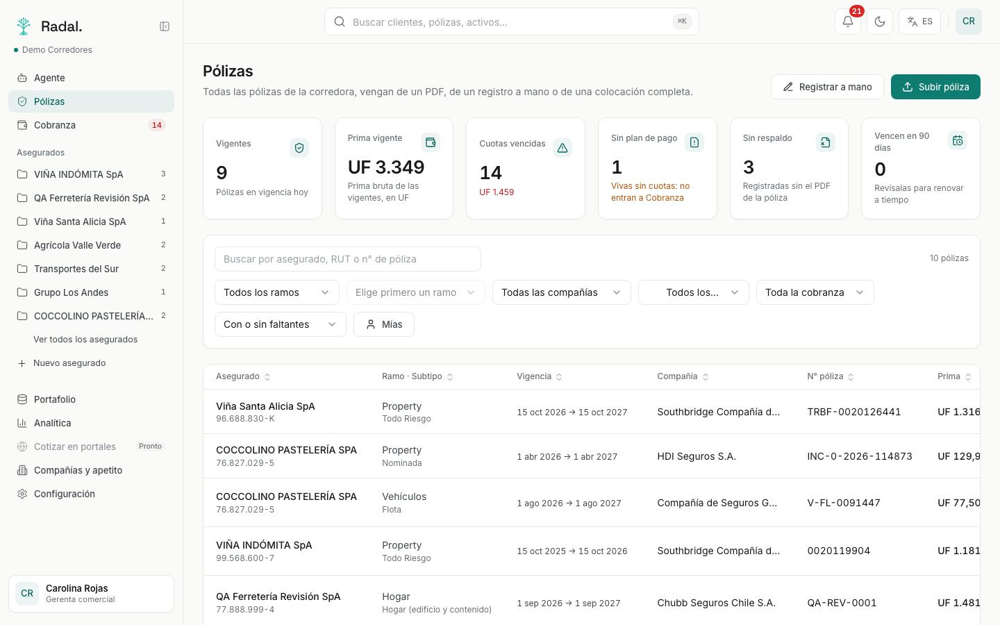
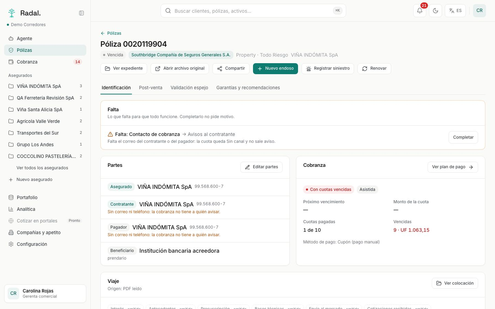
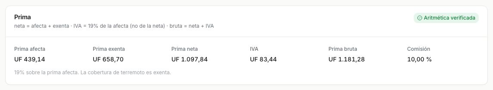
3 · Viajes parciales: las etapas que no ocurrieron quedan “omitida”
Sigue la especificación- Qué ves
- Una póliza que entra por PDF muestra en su Viaje “Origen: PDF leído”, las 12 etapas, las anteriores como omitida, y Póliza emitida y Vigente marcadas. En la cuenta, el rail muestra sólo lo que ocurrió. Por ejemplo: Antecedentes y Bases técnicas omitida, Mercado parcial y Comparación en curso. Hay un link para “Ver etapas omitidas”.
- Por qué
- El corredor parte desde donde está. Si sube la póliza, Radal crea la colocación de ese ramo y vigencia y la cierra con la póliza. No se inventan etapas: las que se saltaron quedan registradas como omitidas. Una vez Vigente no se puede volver atrás. La colocación se crea cuando hace falta, por ejemplo al promover una cotización.
- Especificación
- “Una sola máquina: 12 etapas, 7 pasos, 3 vías” y el paso 2b.6. R1: toda póliza pertenece a una colocación y, si no existe, la crea la vía. R6: lo anterior queda omitida. R34: la etapa nunca contradice a sus pólizas. Las tres vías · Reglas que no se rompen.
- Sigue / desvía
- Sigue R1, R6 y R34. La vía (Tradicional, Digital o Manual) aparece como etiqueta de la cuenta.
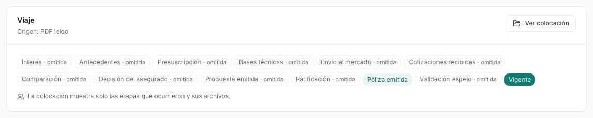
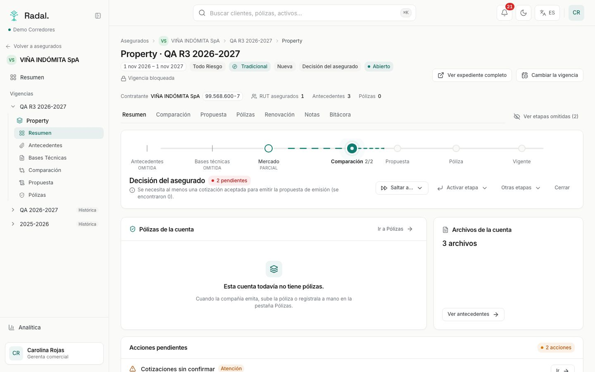
4 · Catálogo cerrado de ramos y compañías, y por qué se pide elegir la compañía
Sigue la especificación (R4)- Qué ves
- Para Subir póliza eliges primero Ramo · Subtipo de una lista fija: 18 ramos y 54 subtipos, iguales para todas las corredoras. Si el PDF no trae el RUT ni el código CMF de la compañía, Radal pregunta “¿Qué compañía emitió esta póliza?” y te sugiere las más probables a partir del nombre leído.
- Por qué
- Muchas pólizas reales imprimen sólo el nombre comercial de la compañía. Una compañía nunca se identifica sólo por el nombre: “HDI”, “HDI Seguros” y “HDI Seguros S.A.” serían tres compañías distintas. Se identifica por RUT y código CMF. Por eso el corredor confirma cuál es, y sólo cuando el PDF no la identifica.
- Especificación
- R4: compañía, ramo y subtipo son catálogos globales y cerrados que ninguna corredora crea; la compañía es única por RUT. Estructura de datos › Catálogo de ramos y subtipos · R4.
- Sigue / desvía
- Sigue. Las corredoras ya no crean ramos. La pregunta por la compañía no estaba descrita en la especificación; aplica la misma regla de no identificar por nombre.
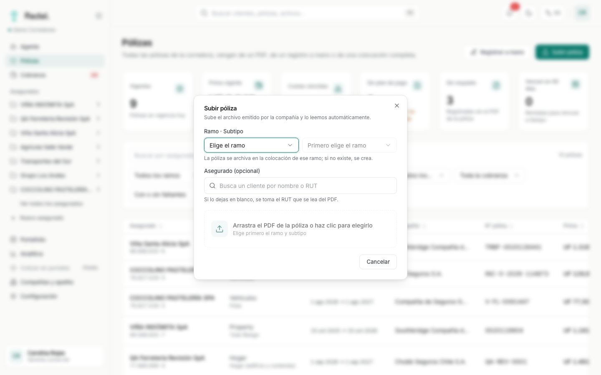
5 · La IA sugiere y la persona confirma
Sigue en lo técnicoSe desvía en los datos principales- Qué ves
- Los Datos técnicos llegan con la marca “Leído por IA — Revisar y confirmar” y el texto “Nada se guarda en la póliza hasta que confirmes”. Puedes Confirmar datos técnicos o Descartar. Las exclusiones y cláusulas se muestran sólo con su título. Si quieres el texto, pídeselo al agente: busca en el PDF y cita el texto literal, con página y sección.
- Por qué
- Separar los datos principales de los técnicos permite tener la póliza en pantalla en unos 10 a 20 segundos, sin esperar la lectura completa. Los títulos bastan para revisar qué cubre la póliza. El texto completo vive en el PDF y el agente lo cita tal cual, sin reescribirlo. Si el asegurado leído no existe en tu cartera, Radal pregunta antes de crearlo (“Crear este asegurado y seguir”).
- Especificación
- R2: el lector nunca escribe en tablas de negocio; genera una extracción y una persona la confirma. Paso 2b.4 Confirmar datos: un formulario prellenado junto al PDF, con lo dudoso en rojo. Las tres vías › Vía 2 · R2.
- Sigue / desvía
- Sigue en los datos técnicos, en el asegurado nuevo y en la compañía. Se desvía en los datos principales (número, vigencia, prima, cuotas y partes): se registran al subir, después de una validación fija que comprueba que el documento es una póliza. No hay una pantalla 2b.4 lado a lado ni una tarjeta “Por confirmar (n)”. Lo que falta aparece como “Falta”. Revisen si echan de menos el paso 2b.4.
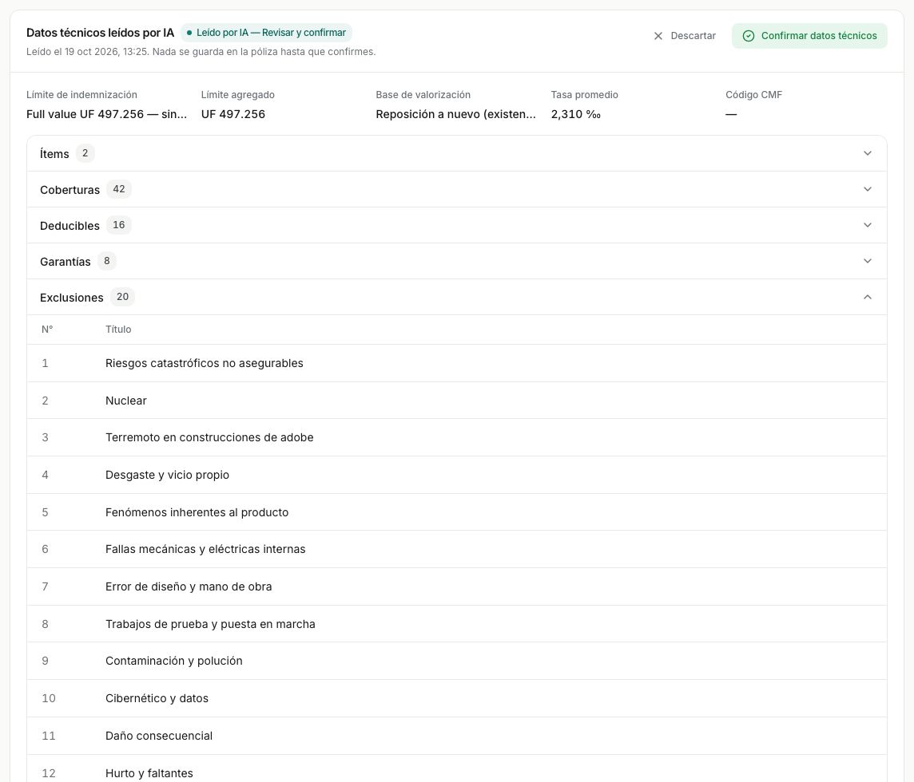
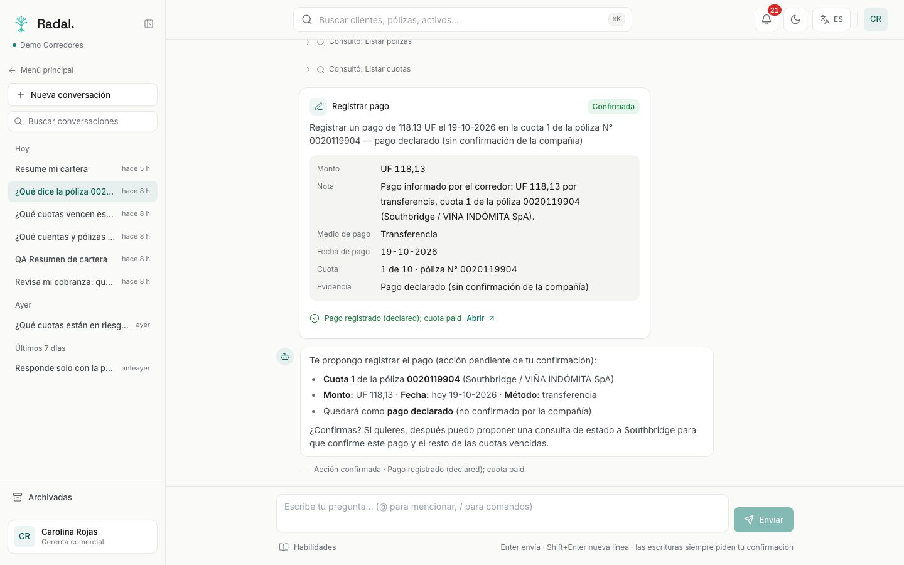
6 · “¿Ya están pagadas?” al cargar pólizas con cuotas vencidas
Agrega- Qué ves
- Si cargas una póliza que lleva meses en vigencia, Radal cuenta las cuotas con vencimiento pasado y pregunta: Sí, marcar pagadas · No, quedan vencidas · Decidir después. Mientras no decidas, esas cuotas quedan “Por revisar”: no generan alertas de término ni cuentan como vencidas. En Cobranza aparece la pestaña Por revisar, que sólo se muestra si tiene cuotas, y en la ficha hay un aviso para decidir.
- Por qué
- Cargar la cartera histórica no puede llenar la campana de falsos “Riesgo de término”. Eso pasó en la ronda 2 y fue el error más molesto. Si eliges Sí, marcar pagadas, se registra un pago declarado por cuota, con la fecha de vencimiento como fecha de pago. Por eso esas cuotas aparecen después en “Pagos sin confirmar”, a la espera de que la compañía las confirme.
- Especificación
- El plan de pago es la pantalla final de toda vía (1.15) y el estado de la cuota se calcula contra su vencimiento y la cadencia (el reloj de la cuota). No contempla la carga de pólizas antiguas. Las tres vías › 1.15 · Cobranza › El reloj de la cuota.
- Sigue / desvía
- Agrega un estado nuevo, Por revisar, para un caso que la especificación no tenía. ¿Es correcto que las cuotas que marcas como pagadas queden como “Pagos sin confirmar”? Opinen.
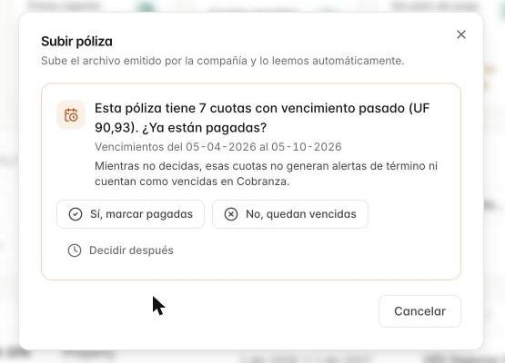
7 · Pólizas duplicadas: se bloquean
Sigue la especificación (R5)- Qué ves
- Si subes una póliza que ya existe, con el mismo número y la misma compañía o el mismo archivo, aparece “Esta póliza ya existe: N° … de …” con Ver póliza. No se registra nada nuevo: ni otra póliza, ni cuotas, ni alertas, ni una nueva lectura técnica. Si es el mismo archivo, ni siquiera se llama a la IA.
- Por qué
- En la ronda 2, subir dos veces el mismo PDF duplicaba cuotas y notificaciones. Una póliza registrada a mano sin su PDF no cuenta como duplicada: el PDF la completa.
- Especificación
- R5: póliza única por compañía y n° de póliza. Sin número (vía Manual), advierte sin bloquear. 2b.6: “Si ya existe igual número y compañía, bloquea por duplicada”. Subir el PDF de una póliza digitada la completa. R5 · Las tres vías › 2b.6 y 3.3.
- Sigue / desvía
- Sigue. Como en dev ya hay varias pólizas del set de demostración, subirlas de nuevo es justamente la prueba de este bloqueo.
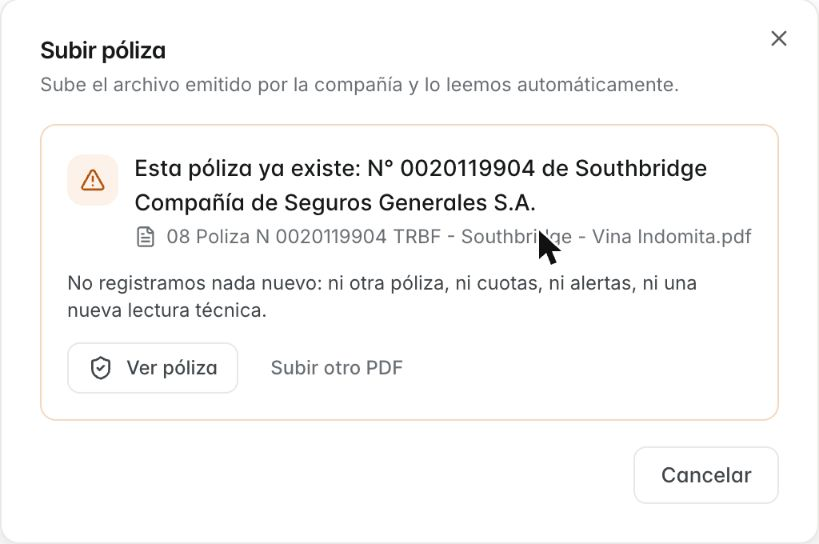
8 · Cobranza en tres niveles por cuota: registro, asistida y en línea
Adelanta el lanzamientoSe desvía de R43- Qué ves
- Cada cuota lleva su nivel. Registro: sólo anotas. Asistida: Radal recuerda al pagador y pregunta a la compañía, y tú confirmas. En línea: el pago con el proveedor (Forpay) está en pausa, así que ninguna cuota ofrece pagar en línea. El panel de la cuota ofrece Registrar pago (también parcial y en pesos), Registrar gestión, Promesa de pago, Cargo automático rechazado (sólo PAC/PAT), Enviar recordatorio, Consultar a la compañía y Compartir. Un pago erróneo se Revierte con motivo y nunca se borra.
- Por qué
- La cobranza es el dolor número uno. El nivel asistido sirve para cualquier compañía desde el primer día. El estado de la cuota se calcula: nunca se cambia a mano y nunca se registra más que el saldo. Cuando una compañía pase a en línea, sus cuotas abiertas suben de nivel solas. El corredor no ve en qué etapa de incorporación está cada compañía.
- Especificación
- MVP: Cobranza es un registro con notificaciones al ejecutivo y no escribe a nadie fuera de la corredora (R43). Los avisos al contratante (C5) y el pago en plataforma con carga del estado de pago (C6) son del lanzamiento. R30: el estado se calcula. R17: la cobranza va al contratante o pagador. Cobranza, clic a clic · R17, R30, R43 · Plan › P3.
- Sigue / desvía
- Sigue C1 (pago, parcial, PAC rechazado, confirmar y revertir con motivo), C2 (gestión y promesa), la cadencia configurable y R30. Adelanta C5: recordatorios al pagador con plantillas que se aprueban una por una en Configuración. Se desvía de R43, porque Radal sí escribe fuera: recordatorios y consultas a la compañía.
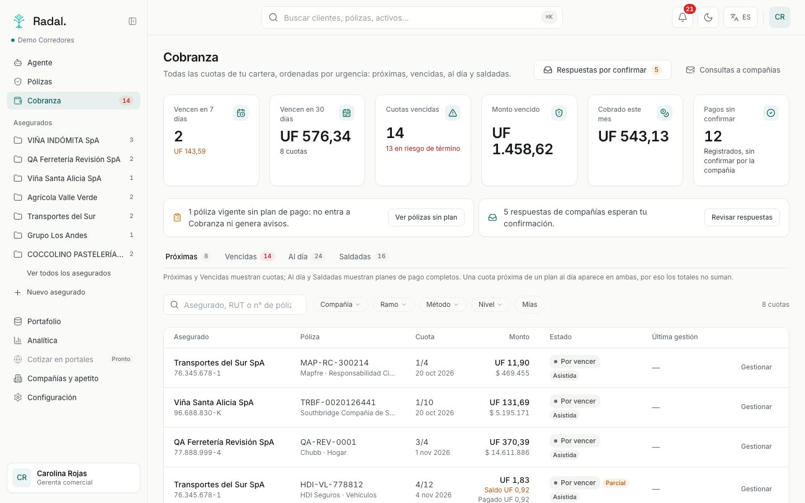
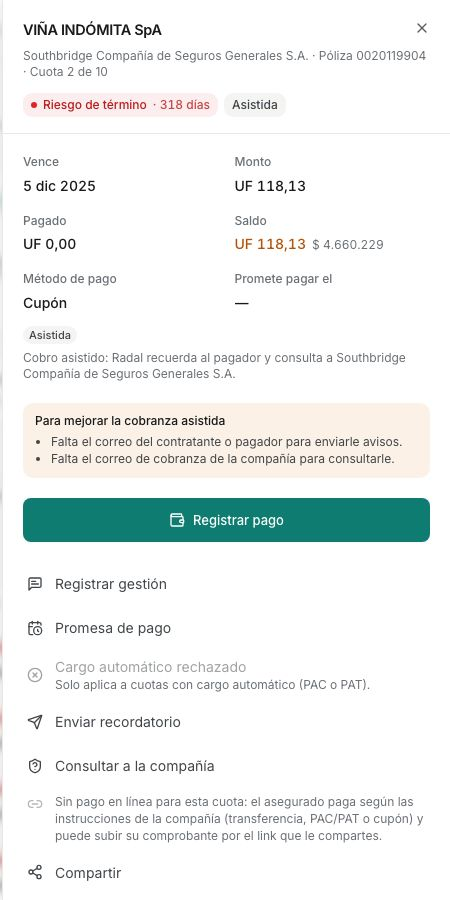
9 · Consultas a la compañía y “Respuestas por confirmar”
Agrega (reemplaza C6)- Qué ves
- Desde una cuota, Consultar a la compañía envía un correo con un código (INQ-…). Si ya hay una consulta abierta para esa cuota, Radal no deja abrir otra y te lleva a la primera. La respuesta de la compañía llega por tres caminos: el correo, el link público de la compañía o el comprobante que sube el asegurado. Las tres terminan en Respuestas por confirmar como Sugerida, con las señales que la respaldan (código de consulta, remitente, n° de cuota y monto). Tú eliges Confirmar, Otra cuota o Rechazar.
- Por qué
- El pago llega a la cuenta de la compañía, no a la del corredor. Por eso no hay conciliación automática y la única fuente confiable es preguntarle a la compañía. Las respuestas por correo se procesan cada 5 minutos y nunca se aplican solas: una persona confirma.
- Especificación
- C6: cargar el estado de pago de la compañía (Excel o PDF), cruzarlo y llevar las diferencias a una bandeja (lanzamiento). R2: una persona confirma. R41: todo pasa por el corredor. Cobranza › C6 · R2, R41.
- Sigue / desvía
- Agrega las consultas por correo en lugar de la carga masiva de C6, que no está. Sigue R2: sugerencia, confirmación humana y registro.
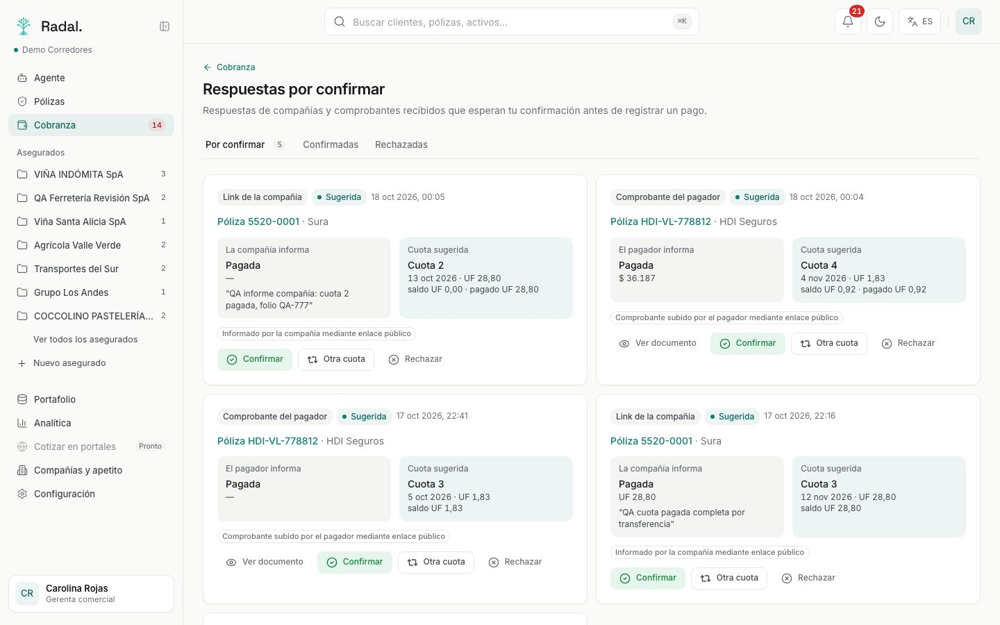
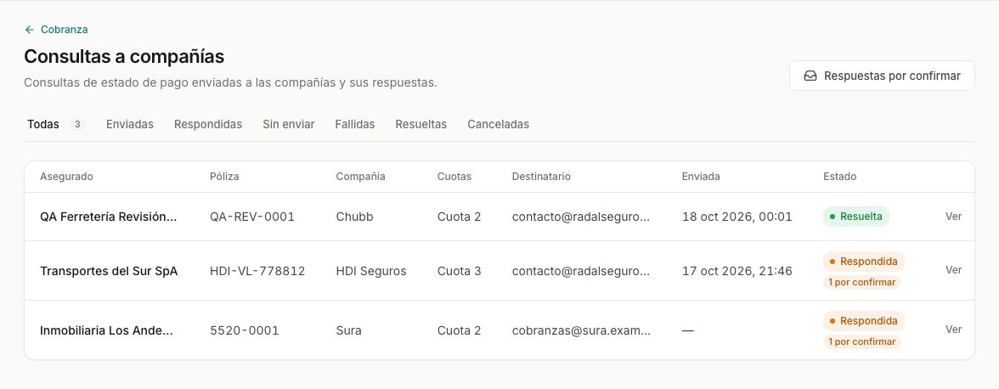
10 · Links públicos para el asegurado y la compañía
Adelanta el lanzamiento- Qué ves
- El asegurado ve sus cuotas, cómo pagar y puede subir un comprobante, que queda “en revisión por tu corredora”. La compañía ve las cuotas consultadas y puede informar su estado. No necesitan usuario ni contraseña. No ven otras pólizas, comisiones ni notas internas.
- Por qué
- Los únicos usuarios con sesión son los de la corredora. El asegurado y la compañía responden por un link que se puede mandar por WhatsApp. Lo que informan es una sugerencia hasta que el corredor la confirma.
- Especificación
- “Vista del asegurado (issue 16)”, en el lanzamiento. R41: sin mensajería directa entre compañía y asegurado; todo pasa por el corredor. Plan de construcción › P3 · R41.
- Sigue / desvía
- Adelanta la vista del asegurado y agrega la de la compañía. Sigue R41.
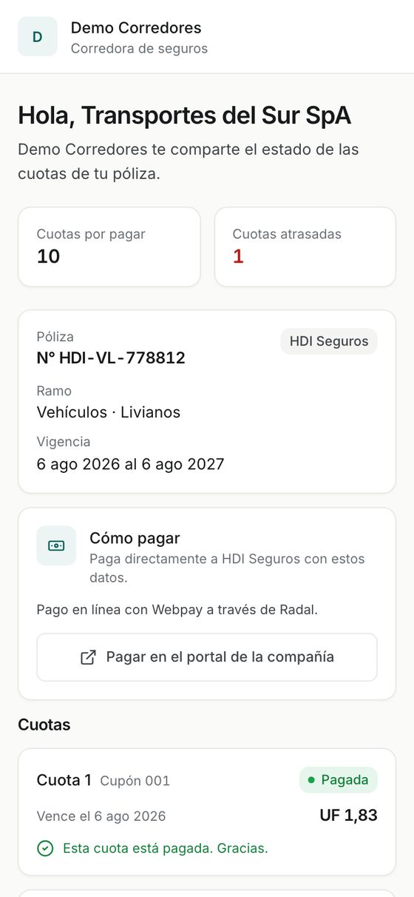
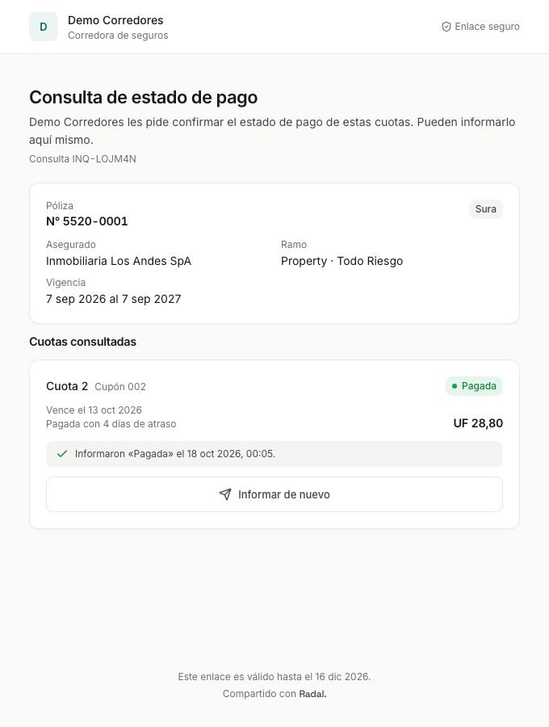
11 · Notificaciones: Por hacer / Para saber, y Mías / Todas
Sigue la especificación- Qué ves
- La campana tiene dos bandejas. Por hacer pide una acción y se cierra cuando se resuelve el origen. Para saber informa. Los administradores eligen Mías / Todas. Las tareas de una cuenta le llegan a su dueño, el ejecutivo. Algunas bandejas son del equipo y no se filtran por “Mías”: “Pagos sin confirmar” y “Respuestas por confirmar” muestran lo de toda la corredora. Por eso llevan la etiqueta Equipo.
- Por qué
- Un pago informado lo puede confirmar cualquiera del equipo, no sólo el dueño de la cuenta. Las tareas personales sí van a la persona responsable.
- Especificación
- Bandejas Por hacer y Para saber; una sola notificación viva por origen y destinatario; el destinatario es el ejecutivo de la colocación. Pantallas y reglas › Notificaciones.
- Sigue / desvía
- Sigue las bandejas y el destinatario. Agrega Mías / Todas para administradores y las bandejas de equipo.
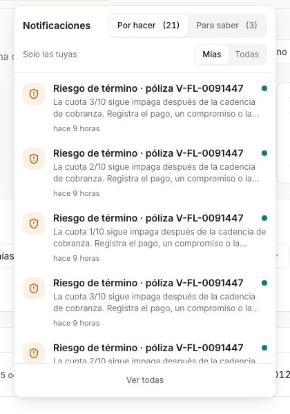
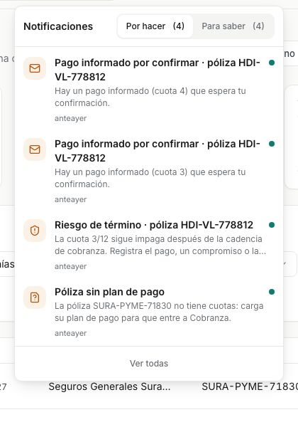
12 · Comparación de cotizaciones → Propuesta
SiguePDF de la propuesta: Pronto- Qué ves
- En la Comparación subes las cotizaciones una a una. Cada una se lee y aparece como columna con su compañía y prima total, sin recargar la página. Radal las alinea en una tabla estandarizada (coberturas, sublímites, deducibles, exclusiones y garantías, cada valor con su Texto original) y propone una recomendación de la IA con salvedades. Promover a propuesta te pide elegir la compañía del catálogo. En la pestaña Propuesta, Generar propuesta arma el borrador. El botón Descargar PDF dice Pronto.
- Por qué
- El comparador es uno de los tres diferenciales que el corredor compra el primer día. La propuesta (lo que el corredor envía a la compañía) es lo contrario de la cotización (lo que la compañía ofrece). En el código se llaman al revés, pero en pantalla dicen lo correcto.
- Especificación
- Comparador de cotizaciones (P1 #9). Documentos que arma RADAL: el Comparativo y la Propuesta, en PDF para adjuntar. Plan › P1 · Pantallas › Documentos que arma RADAL · Las tres vías › Vía 1 y 2a.
- Sigue / desvía
- Sigue el comparador y la propuesta en pantalla. Pronto: el PDF de la propuesta. Lo pendiente de la propuesta está en Problemas ya conocidos.
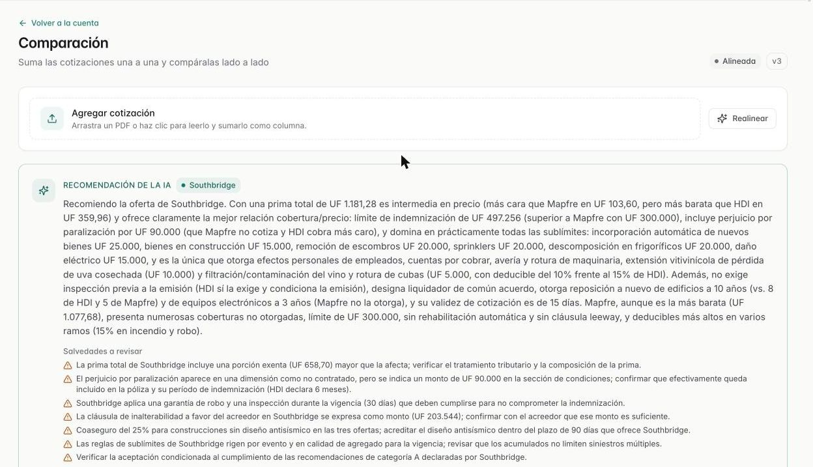
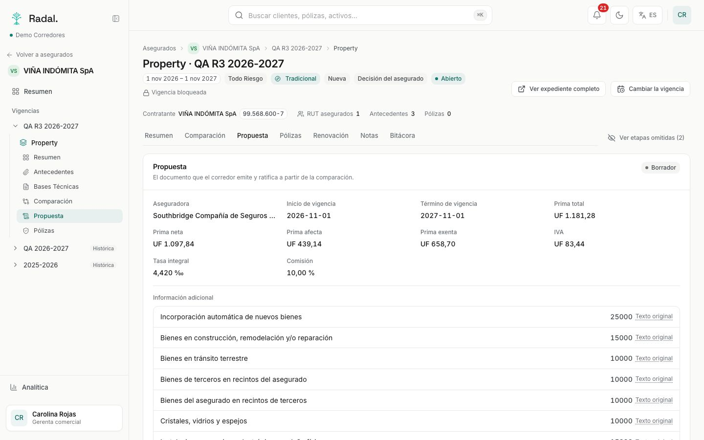
13 · Cotizar en portales: Pronto
Pronto- Qué ves
- Cotizar en portales aparece en el menú, deshabilitado con la etiqueta Pronto. Su página explica por qué y qué hacer mientras tanto: pedir la cotización y subir el PDF en la Comparación.
- Por qué
- Para aplicar filtros dentro del portal de cada compañía se necesita el usuario y la clave de la corredora en ese portal. El mecanismo está construido, con HDI como ejemplo, pero queda apagado hasta tener esas credenciales.
- Especificación
- 2a: el corredor sube las cotizaciones de los portales y RADAL arma el comparativo. 2c (preparar en RADAL lo que se cotizará en portales) es de una fase posterior. Las tres vías › Vía 2 · Plan › Fases posteriores.
- Sigue / desvía
- Sigue: lo del MVP es subir el PDF, y eso funciona.
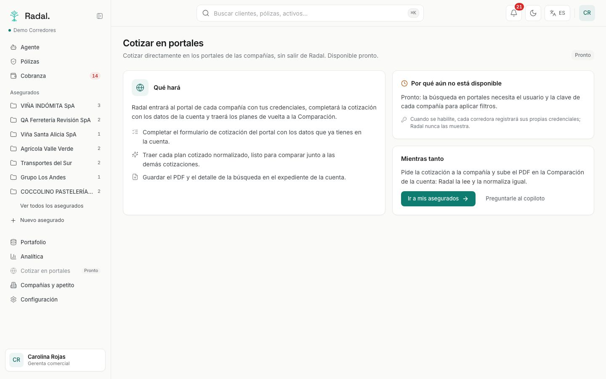
14 · El agente propone y sólo escribe cuando confirmas
Sigue R2- Qué ves
- El agente responde con tus datos: cartera, cuotas, pólizas, documentos y faltantes. Bajo cada respuesta muestra los pasos que dio, por ejemplo “Consultó: Listar cuotas”. Para escribir (registrar un pago, enviar un recordatorio, consultar a una compañía) prepara una tarjeta con los datos en lenguaje de corredor: monto, cuota y póliza, fecha y medio. Nada pasa hasta que aprietas Confirmar. Con Habilidades puedes cargar instrucciones especializadas, como Revisar cobranza.
- Por qué
- Es la regla de toda la IA de Radal: la IA sugiere, una persona confirma y recién entonces se registra. Cada intento queda registrado.
- Especificación
- El menú incluye “Agentes IA”. R2: nada se escribe sin confirmación. El agente por WhatsApp es de una fase posterior. Pantallas y reglas · R2 · Plan › Fases posteriores.
- Sigue / desvía
- Sigue. La tarjeta identifica la cuota por número de póliza y número de cuota (“Cuota 2 de 4 · póliza N° …”): léanla antes de Confirmar.
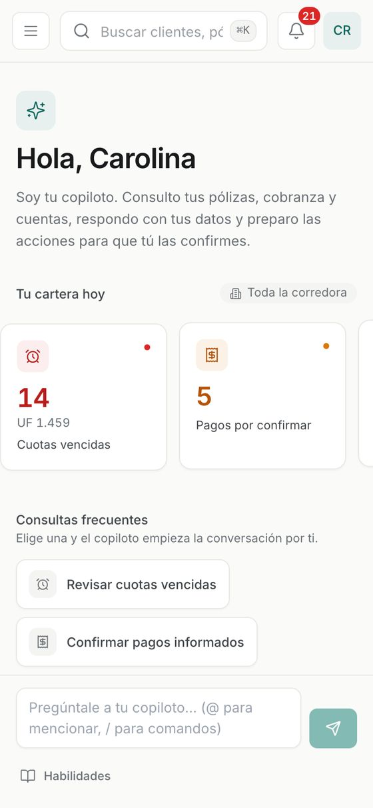
15 · Vocabulario en pantalla: “Asegurados” y “Cuenta”
Se desvía- Qué ves
- En el menú, Asegurados lista las carpetas comerciales, por ejemplo VIÑA INDÓMITA SpA, con sus empresas (RUT), vigencias y ramos. Dentro de cada una, el trabajo de un ramo en una vigencia se llama cuenta: “Property · QA R3 2026-2027”, “Pólizas de la cuenta”, “Nueva cuenta”.
- Por qué
- Es el vocabulario que heredó dev antes de la especificación v15. Cambiarlo toca muchas pantallas y no entró en esta versión.
- Especificación
- En pantalla: Cliente (la carpeta), Asegurado (un RUT) y Colocación (un ramo en una vigencia), “nunca Cuenta ni Lead”. El modelo y el idioma · Plan › P1 #2.
- Sigue / desvía
- Se desvía. Cuando prueben, anoten dónde el vocabulario los confunde. Eso ayuda a priorizar el cambio.
16 · Dónde se configura: Configuración (la corredora) y Mantenedor (Radal)
Sigue en cobranzaSe desvía en Compañías y Metas- Qué ves
- Configuración, sólo para la administradora, tiene las pestañas Perfil · Equipo y roles · Documentos · Correo · Cobranza · Compañías y cobro · Integraciones. En Cobranza están la cadencia (por defecto −15, −5, 0, +3 y +10 días), las tolerancias, los avisos al contratante (cada plantilla se aprueba) y las consultas automáticas a la compañía. En Compañías y cobro, la corredora completa por compañía el correo de cobranza y “cómo pagar”. El Mantenedor (
admin@radal.cl) es la consola de Radal: perfil de cobro por compañía, cuentas de proveedor (las claves se guardan pero nunca se muestran), eventos recibidos y tareas programadas. - Por qué
- Lo que es igual para todas las corredoras, como la incorporación de una compañía al pago en línea, lo configura Radal una vez. Lo que es propio de cada corredora, como sus contactos y sus instrucciones, lo ajusta ella.
- Especificación
- Configuración: Perfil de la corredora · Usuarios · Compañías (catálogo sólo de consulta, con Pedir alta de compañía, “sin contactos”) · Cobranza (cadencia; C5.1 Aprobar mensajes) · Metas. Pantallas y reglas › Configuración · Cobranza › C3 y C5.
- Sigue / desvía
- Sigue la cadencia y la aprobación de mensajes. Se desvía en Compañías: la corredora sí guarda un contacto de cobranza por compañía, porque lo necesitan las consultas. Tampoco están las Metas, porque no hay Dashboard de comisión.
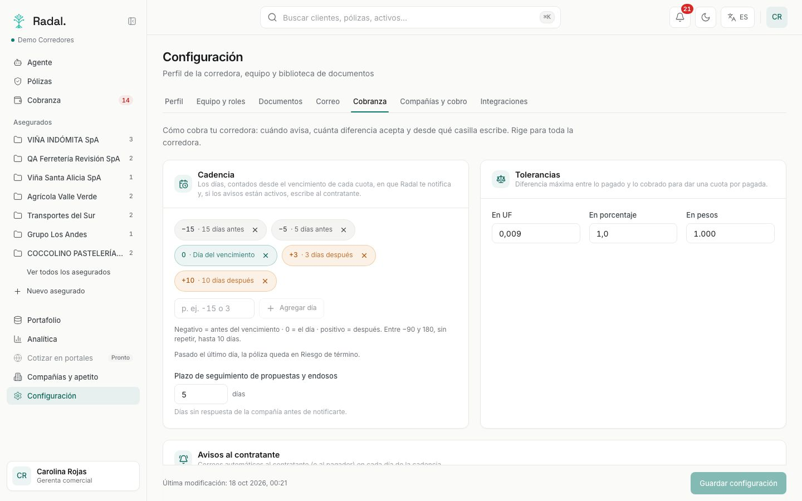
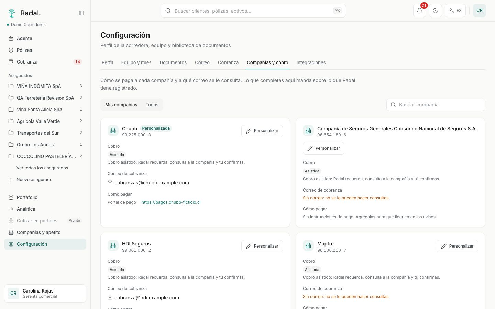
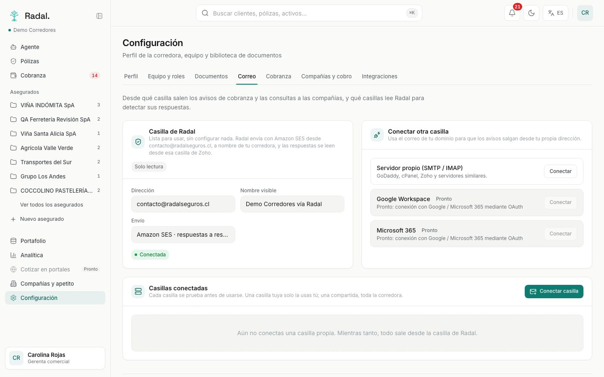
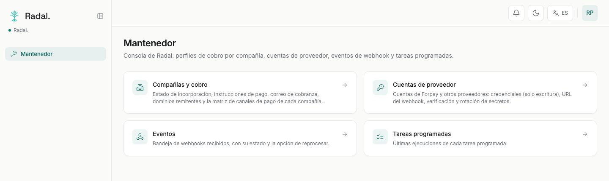
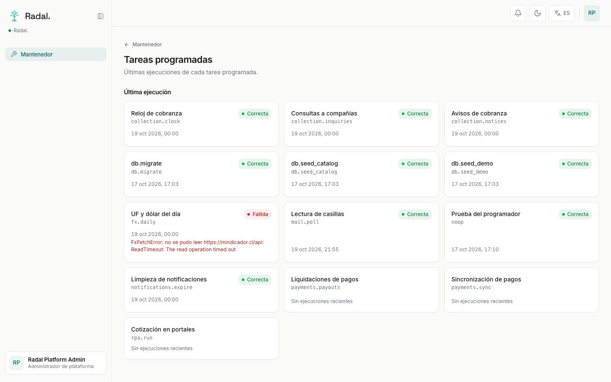
04Qué probar
Hay diez escenarios. Elijan los que les toquen; no hace falta hacerlos todos ni en orden. Cada uno indica el usuario, los documentos, los pasos, lo que debería pasar y qué mirar con ojo de corredor. Los PDF son del set de demostración del equipo, la carpeta “EXPEDIENTES DEMO”.
Qué PDF sirven, y por qué algunos dicen “ya existe”. En dev ya están cargadas las pólizas 0020119904 (Viña Indómita), V-FL-0091447 (Coccolino Vehículos), INC-0-2026-114873 (Coccolino Multirriesgo) y TRBF-0020126441 (Viña Santa Alicia). Si las subes, verás “Esta póliza ya existe”, que es la prueba del bloqueo de duplicados (R5). Al 19-10 todavía no están en dev:
LA FAVORITA/…/08 Poliza N 15-04-0091883 - HDI - La Favorita.pdf: Property, vigencia desde el 05-01-2027, sin cuotas pasadas.JO PASTELERIA/ACCIDENTES PERSONALES/…/08 Poliza N AP-CH-2026-77104 - Chubb - JO Pasteleria AP.pdf: 10 cuotas mensuales desde el 05-07-2026, así que trae cuotas pasadas.JO PASTELERIA/RESPONSABILIDAD CIVIL/…/08 Poliza N RC-CH-2026-118447 - Chubb - JO Pasteleria RC.pdf: 4 cuotas trimestrales; las del 20-06 y del 20-09-2026 ya vencieron.- Formatos reales de compañía, más largos:
GRUPO VIÑA INDOMITA/VIÑA INDOMITA/…/20588155 TRBF VIÑA INDOMITA 2024-2025.pdf(Liberty, ya vencida).
Como el ambiente es compartido, la primera persona que suba un PDF lo registra. Las siguientes verán “ya existe”, y eso también es una prueba válida. Para no depender de un PDF, usen Registrar a mano con una póliza “QA” (escenario S4).
S1Copiloto y conversacionesadmin@demo.cl≈ 10 min
Documentos
Ninguno.
Pasos
- Entra. Debe abrirse Agente con “Hola, Carolina” y los indicadores de “Toda la corredora”.
- Haz clic en cada indicador y comprueba que la lista que abre muestra el mismo número. Por ejemplo, “Cuotas vencidas” abre Cobranza en la pestaña Vencidas.
- Haz clic en la consulta frecuente Revisar cuotas vencidas. Se abre una conversación nueva que responde con tus datos. Compara las cuotas y los montos con la pantalla Cobranza.
- En la barra izquierda, busca la conversación por una palabra, renómbrala (menú Opciones de «…»), archívala, mira Archivadas y restáurala.
- Abre Ver más consultas y prueba una de Pólizas o Portafolio.
Qué debería pasar
- Cada indicador coincide con su lista. Las respuestas llegan en menos de un minuto, en español, sin códigos internos.
- Las conversaciones del ejecutivo no aparecen en la barra de la administradora, y al revés.
Ojo de corredor
- ¿Son estos los números con los que ustedes parten el día? ¿Falta alguno, como la comisión del mes o las renovaciones?
- ¿Las consultas frecuentes son las que harían? Propongan otras.
- ¿La respuesta le habla a un corredor: montos en UF, fechas dd-mm-aaaa, sin jerga técnica?
S2Subir una póliza nueva, revisar los Datos técnicos y probar el duplicadoadmin@demo.cl≈ 10 min
Documentos
08 Poliza N 15-04-0091883 - HDI - La Favorita.pdf. Si alguien ya la subió, prueben el duplicado con ella y usen 20588155 TRBF VIÑA INDOMITA 2024-2025.pdf como póliza nueva.
Pasos
- Pólizas → Subir póliza → elige Ramo · Subtipo (para La Favorita, el que ustedes elegirían, por ejemplo Property · Nominada) y deja el asegurado en blanco.
- Arrastra el PDF. Mira la barra: Subiendo · Leyendo datos principales · Listo. Anota cuánto tarda; debería estar entre 10 y 20 segundos.
- Si pregunta “¿Qué compañía emitió esta póliza?”, revisa la sugerencia y elige. Si dice “No sabemos a qué asegurado pertenece esta póliza”, usa Crear este asegurado y seguir.
- En la ficha, revisa Partes, Cobranza, Viaje (“Origen: PDF leído”, con etapas omitidas), Prima (“Aritmética verificada”) y Contenido extraído (cuotas).
- Espera la tarjeta Datos técnicos leídos por IA, que tarda menos de un minuto. Abre Coberturas, Deducibles, Exclusiones y Cláusulas y compáralas con el PDF. Después Confirma o Descarta.
- Vuelve a subir el mismo PDF. Debe decir “Esta póliza ya existe” y no registrar nada nuevo.
Qué debería pasar
- La póliza queda en la colocación correcta, con su plan de pago leído. Si el PDF no trae cuotas, aparece en “Sin plan de pago”.
- Los Datos técnicos no se guardan hasta que confirmas.
Ojo de corredor
- Exactitud: el número, la vigencia (12:00), la prima afecta, exenta, neta, IVA y bruta, la comisión, las cuotas, el beneficiario o acreedor y cada deducible, comparados con el PDF.
- ¿Las coberturas y los sublímites quedaron en la sección correcta? ¿Hay repetidas?
- ¿Les basta con ver sólo el título de las exclusiones?
- ¿Echan de menos revisar los datos principales antes de que se registren, como en el paso 2b.4?
S3Póliza con cuotas pasadas: “¿Ya están pagadas?”admin@demo.cl≈ 10 min
Documentos
08 Poliza N AP-CH-2026-77104 - Chubb - JO Pasteleria AP.pdf (Accidentes Personales · AP colectivo). Una segunda persona puede usar 08 Poliza N RC-CH-2026-118447 - Chubb - JO Pasteleria RC.pdf (Responsabilidad Civil). Ambas son del mismo asegurado, Pacto Food SpA: la segunda debería asociarse al asegurado que ya existe en vez de crear otro.
Pasos
- Sube la póliza como en S2. Al terminar debe preguntar “Esta póliza tiene N cuotas con vencimiento pasado (UF …). ¿Ya están pagadas?”.
- Elige Decidir después. Ve a Cobranza: debe aparecer la pestaña Por revisar con esas cuotas, que no cuentan como vencidas. La campana no debe recibir “Riesgo de término”.
- Abre la ficha de la póliza. Debe mostrar un aviso que repite la pregunta.
- Decide: No, quedan vencidas (las alertas siguen su curso de inmediato) o Sí, marcar pagadas (las cuotas quedan pagadas como pago declarado).
Qué debería pasar
- La cantidad y el total en UF de la pregunta coinciden con el cuadro de cuotas del PDF.
- Con Sí, las cuotas aparecen en “Pagos sin confirmar”. Con No, aparecen en Vencidas o en Riesgo de término.
- La segunda póliza de Pacto Food SpA se asocia al asegurado existente; no debe crear un segundo asegurado con el mismo RUT. Revisa si llega una notificación Para saber de “póliza enlazada a un asegurado existente”: en la revisión del 19-10 no siempre llegó.
Ojo de corredor
- ¿Así es como cargarían la cartera vieja de un cliente?
- ¿Tiene sentido que las cuotas marcadas como pagadas queden “sin confirmar por la compañía”?
S4Registrar a mano una póliza “QA” y cargar su plan de pagoadmin@demo.cl≈ 15 min
Documentos
Ninguno: es una póliza sin PDF (vía Manual).
Pasos
- Pólizas → Registrar a mano. Usa un asegurado “QA” tuyo o “QA Ferretería Revisión SpA”, una compañía del catálogo y un ramo · subtipo.
- Vigencia que haya partido hace unos meses, por ejemplo 01-06-2026 a 01-06-2027. N° de póliza
QA-<tus iniciales>-001. - Escribe los montos como los escribirías tú:
1.234,5o12,5. Prueba primero una prima bruta que no cuadre con afecta + exenta + IVA y mira cómo reacciona. Después corrígela o déjala vacía para que Radal la calcule. - Guarda. En la ficha deberías ver “Sin respaldo” y lo que falta como “Falta”.
- Carga el plan de pago desde la ficha, con cuotas mensuales desde la fecha de inicio. Si hay cuotas con fecha pasada, la ficha debería mostrar el aviso “¿Ya están pagadas?” de S3.
- Intenta registrar otra póliza con el mismo n° y la misma compañía. No debería dejarte (R5).
Qué debería pasar
- Los formatos chilenos se entienden bien: punto para miles y coma para decimales.
- Hoy una prima bruta que no cuadra con neta + IVA no deja guardar. La especificación (R9) dice advertir sin bloquear: cuéntennos qué prefieren.
- Si las cuotas no suman la prima bruta, Radal muestra la diferencia.
Ojo de corredor
- ¿El formulario pide lo justo? ¿Falta algún dato que siempre registran?
- ¿Los métodos de pago (Cupón, PAC, PAT, Transferencia, Pago único) cubren su realidad?
- ¿Les ha pasado una póliza cuya bruta no cuadra con la aritmética? ¿Cómo la registrarían?
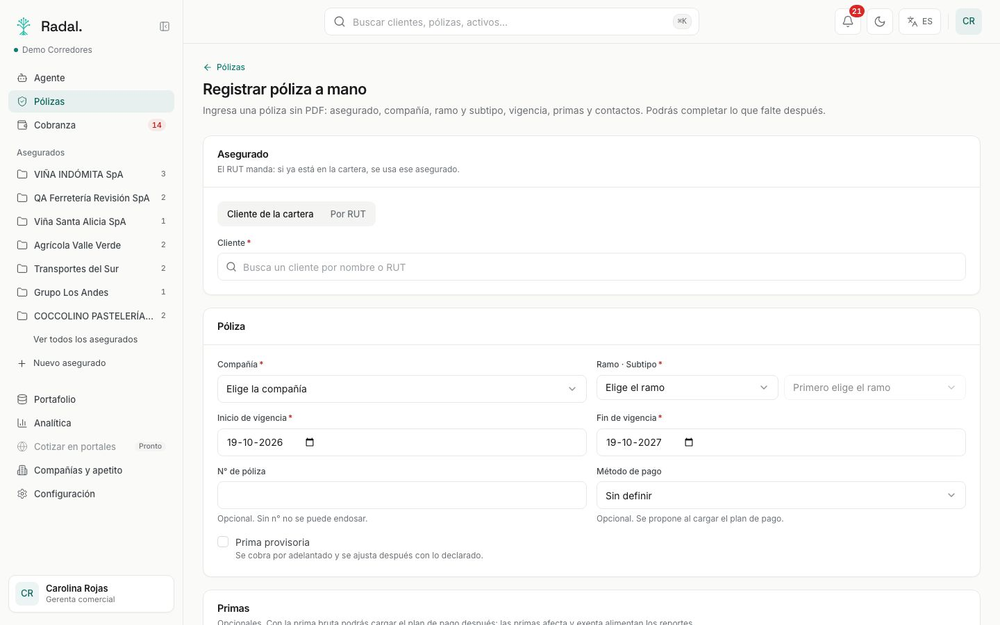
S5Cobranza del día a díaadmin@demo.cl≈ 20 min
Documentos
Una imagen o PDF cualquiera como comprobante, nombrado “QA comprobante”. Usa de preferencia cuotas de tu póliza QA de S4.
Pasos
- Cobranza: recorre las tarjetas y las pestañas Próximas, Vencidas, Al día y Saldadas, y los filtros Compañía, Ramo, Método, Nivel y Mías.
- En una cuota, Gestionar → Registrar pago parcial en pesos (
150.000). Debe quedar “Parcial” con “Pagado UF … de …”. - Intenta registrar un pago mayor que el saldo. No debe permitirlo.
- Promesa de pago con una fecha. La cuota queda en acuerdo hasta esa fecha.
- En una cuota con PAC, prueba Cargo automático rechazado. En una cuota que no es PAC, el botón debe estar deshabilitado y decir por qué.
- En la lista de pagos del panel, Revertir un pago con motivo. No debe borrarse: queda revertido.
- Enviar recordatorio: en la vista previa, el monto debe ser el saldo y el saludo debe ir a quien corresponde (contratante o pagador). Si el destinatario no es @radalseguros.cl, quedará “omitido”.
- Consultar a la compañía dos veces por la misma cuota. La segunda debe rechazarse con un link a la primera.
Qué debería pasar
- El panel, el plan de pago de la ficha y las tarjetas cuentan lo mismo después de cada paso.
- Ningún botón queda muerto: o funciona, o está deshabilitado con su motivo.
Ojo de corredor
- ¿El orden por urgencia y los estados (Por vencer, Vencida, Riesgo de término, En acuerdo, Parcial) son los suyos?
- ¿El texto del recordatorio es algo que enviarían a su cliente?
- ¿Falta alguna gestión típica de cobranza?
S6Preguntarle a la compañía por correo y confirmar la respuestaadmin@demo.cl≈ 15 min (incluye esperar hasta 5 min)
Documentos
Tu casilla @radalseguros.cl, que hará de “compañía”. En dev sólo esas direcciones reciben correo. Si no tienes una, haz este escenario junto a alguien que sí la tenga.
Pasos
- En una cuota de tu póliza QA: Consultar a la compañía, con tu dirección @radalseguros.cl como destinatario.
- En tu correo, responde al mensaje sin cambiar el asunto (lleva el código
RADAL-INQ-…). Por ejemplo: “Confirmamos que la cuota N está pagada, UF X, el dd-mm-aaaa”. - Espera hasta 5 minutos y abre Cobranza → Respuestas por confirmar.
- Revisa la sugerencia: cuota sugerida, monto, fecha y señales (código de consulta, remitente, n° de cuota y monto). Elige Confirmar, Otra cuota o Rechazar.
- Ve a Consultas a compañías: la consulta debe pasar a “Respondida” y después a “Resuelta”.
Qué debería pasar
- La respuesta nunca se aplica sola. Al confirmar se registra el pago y la cuota baja de las vencidas.
Ojo de corredor
- ¿Así le escribirían a la compañía? ¿El correo de consulta tiene lo necesario (póliza, asegurado, cuota y monto)?
- Prueben respuestas ambiguas, como “la cuota 3 sí, la 4 no” o un monto distinto. ¿La sugerencia acierta?
S7Comparar 3 cotizaciones → Promover → Generar propuestaadmin@demo.cl≈ 20–25 min
Documentos
GRUPO VIÑA INDOMITA/VIÑA INDOMITA/2. Subexpediente de Comparación…/ 03 Cotizacion Southbridge - Vina Indomita.pdf, 04 Cotizacion HDI - Vina Indomita.pdf y 05 Cotizacion Mapfre - Vina Indomita.pdf. Como referencia humana, usen 06 Comparativo de Alternativas - Vina Indomita.pdf de la misma carpeta.
Pasos
- Asegurados → VIÑA INDÓMITA SpA → Nueva cuenta: Property · Todo Riesgo, con tus propias fechas y una etiqueta de vigencia “QA <tus iniciales> 2026-2027”. Si dice “Ya existe una carpeta abierta para este ramo y esta vigencia”, cambia la fecha de inicio.
- En la cuenta, pestaña Comparación → Abrir comparador → Agregar cotización: sube 03, 04 y 05, una por una. Cada una tarda unos 70 segundos y aparece como columna con compañía y prima total.
- Espera la alineación, alrededor de un minuto. Lee la tabla y la recomendación de la IA y compáralas con los PDF y con el 06.
- Promover a propuesta la cotización que elegirías. La compañía se elige de una lista.
- Pestaña Propuesta → Generar propuesta. Tarda entre 75 y 90 segundos y hoy no muestra barra de progreso. Revisa primas, IVA, tasa y comisión.
- Vuelve al Resumen: la cuenta debió avanzar sola (Antecedentes y Bases técnicas omitidas, Mercado parcial).
Qué debería pasar
- Las primas de las tres compañías: Southbridge UF 1.181,28, HDI UF 1.541,24 y Mapfre UF 1.077,68.
- “Descargar PDF” de la propuesta está deshabilitado con Pronto.
Ojo de corredor
- Lo más importante de esta ronda: ¿la tabla compara lo que ustedes comparan? ¿Los deducibles muestran porcentaje, base y mínimo? ¿Hay filas repetidas o conceptos partidos en dos?
- ¿La recomendación dice algo que contradice la tabla o el PDF? Copien la frase exacta en el reporte.
- ¿La propuesta tiene lo que mandarían a la compañía (ver “Documentos que arma RADAL” en la especificación)?
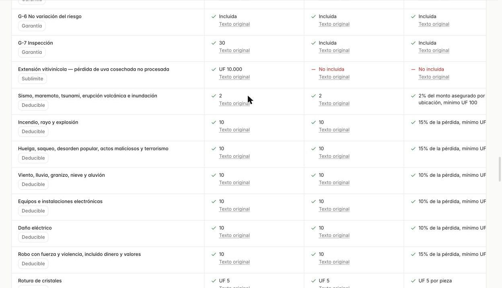
S8El agente: preguntas de cartera, citar el PDF y registrar un pagoadmin@demo.cl≈ 15 min
Documentos
Ninguno. Ten a mano el PDF de la póliza que vas a preguntar, por ejemplo 08 Poliza N INC-0-2026-114873 - HDI - Coccolino Multirriesgo.pdf.
Pasos
- Nueva conversación: “Resume mi cartera”. Compara las cifras con Pólizas y Cobranza.
- “¿Qué dice la póliza INC-0-2026-114873 sobre el deducible de sismo? Cita el texto.” Busca la cita en el PDF: ¿es literal? ¿La página y la cláusula son correctas?
- Abre Habilidades, activa Revisar cobranza y pregunta “¿Qué cuotas están en riesgo y qué le pregunto a cada compañía?”.
- “Registra un pago de la cuota 1 de la póliza QA-<tus iniciales>-001 por transferencia.” El agente debe pedir lo que falte y mostrar una tarjeta. Antes de Confirmar, verifica que la tarjeta diga tu póliza y tu cuota. Si no, Descarta y repórtalo.
Qué debería pasar
- Nada se escribe sin Confirmar. Después de confirmar, el resultado aparece en español y la cuota cambia en Cobranza.
Ojo de corredor
- ¿Le confiarían esta respuesta a un cliente? ¿Hay datos inventados?
- ¿Qué le pedirían al agente en un día normal que hoy no sepa hacer?
S9Links públicos: el asegurado sube un comprobante y la compañía informasin usuario + ejecutivo@demo.cl≈ 10 min
Documentos
Una imagen o PDF nombrado “QA comprobante”.
Pasos
- En una ventana privada abre el link del asegurado. Revisa cuotas, “Cómo pagar” y estados. Sube el comprobante en una cuota impaga y recarga la página: debe seguir “Comprobante en revisión”.
- Abre un link de compañía e informa el estado de una cuota, con una nota que empiece con “QA”.
- Entra como
ejecutivo@demo.cly busca las nuevas tareas en la campana. Después entra como admin y revisa Respuestas por confirmar. - También puedes crear tu propio link desde el panel de una cuota de tu póliza QA, con Compartir.
Qué debería pasar
- Lo que informan el asegurado y la compañía llega como Sugerida; nada se marca pagado solo.
- Los links no muestran comisiones, notas internas ni otras pólizas.
Ojo de corredor
- ¿Le mandarían este link a su cliente por WhatsApp? ¿Qué le cambiarían al texto?
- ¿Una compañía respondería por aquí?
S10Vista del ejecutivo (Mías) y uso en el celularejecutivo@demo.cl≈ 15 min
Documentos
Ninguno. Usa tu celular o la vista responsiva del navegador a 375 px de ancho.
Pasos
- Como ejecutivo: el copiloto debe decir “Mis números”. Compara cada indicador con Pólizas y Cobranza usando el filtro Mías.
- Revisa qué controles están deshabilitados para el ejecutivo y si cada uno explica por qué. No debería ver Configuración.
- En el celular: Pólizas, una ficha, Cobranza y el panel de una cuota, la campana, el copiloto y los links públicos.
Qué debería pasar
- Lo personal se filtra por “Mías”. Las bandejas de equipo (“Pagos sin confirmar”, “Respuestas por confirmar”) siguen mostrando lo de toda la corredora, y eso es intencional.
- En el celular todo se lee y se puede tocar, salvo la tabla de la Comparación, que tiene un error conocido.
Ojo de corredor
- ¿Qué haría un ejecutivo desde el celular en terreno? ¿Lo puede hacer?
- ¿Debería Pólizas o Cobranza abrir con “Mías” activado para el ejecutivo?
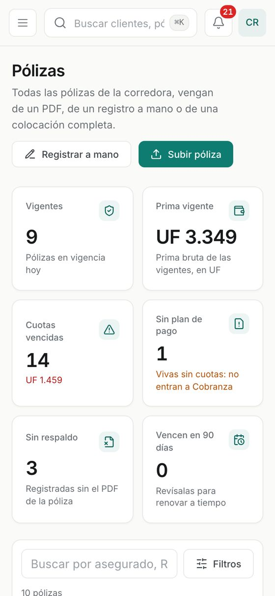
05Qué no está todavía (no lo reporten como error)
| Qué | Estado | Qué ves en la app |
|---|---|---|
| Pago en línea (Forpay) | En pausa | Pausado por decisión hasta que el equipo se reúna con Forpay. Ninguna cuota ofrece “Pagar”. En el Mantenedor, la cuenta de prueba de Forpay aparece con la verificación fallida. |
| Cotizar en portales | Pronto | Menú deshabilitado con su motivo: necesita el usuario y la clave de cada compañía. |
| Pronto | No se envía nada por WhatsApp. Los links públicos se pueden copiar y mandar a mano. | |
| Conectar Google Workspace / Microsoft 365 | Pronto | En Configuración → Correo aparecen deshabilitados. Sí se puede conectar un servidor propio (SMTP/IMAP). |
| PDF de la Propuesta | Pronto | “Descargar PDF · Pronto”. La propuesta se ve en pantalla. |
| Lectura de documentos escaneados | No está | La IA lee PDF con texto. Un escaneo sin texto no se lee. Un Excel se imprime a PDF antes de subirlo. |
| Dashboard con comisión del mes contra la meta | No está | El inicio es el copiloto (decisión 1). |
| Carga masiva del estado de pago de la compañía (C6) | No está | En su lugar están las consultas a la compañía y Respuestas por confirmar (decisión 9). |
| Asegurado propio de cada corredora (R33) | Pendiente | En dev hay una sola corredora de prueba, así que no se nota. |
| Endosos, siniestros, validación espejo y renovación | Sin cambios en v12 | Los botones existen en la ficha (Nuevo endoso, Registrar siniestro, Renovar) y vienen de versiones anteriores. No fueron foco de esta versión, así que las diferencias con E1–E4 y S1–S3 de la especificación son esperadas. Las observaciones sirven, pero no son prioridad. |
| UF y dólar del día | Aviso | La tarea diaria que trae la UF desde mindicador.cl falla a ratos. Se usa el último valor cargado, así que los montos en pesos pueden usar una UF de días anteriores. |
Problemas ya conocidos
La revisión del 19-10-2026 encontró los siguientes problemas. Los de la primera columna ya están corregidos en esta versión: si los vuelven a ver, repórtenlos como crítico. Los de la segunda siguen pendientes y no hace falta reportarlos de nuevo, salvo que encuentren casos peores.
Corregido en esta versión
- El agente ya no apunta a otra cuota. Identifica la cuota por número de póliza + número de cuota; si no la encuentra o hay dudas, se niega a proponer. La tarjeta muestra “Cuota 2 de 4 · póliza N° …” para que verifiquen antes de Confirmar.
- El agente conoce la fecha de hoy (“con fecha de hoy” ya no la pregunta).
- Comparación: los deducibles muestran la condición completa (“10 % de la pérdida, mínimo UF 10”); la recomendación se calcula sobre la tabla final y compara prima total; una columna sin prima ofrece Reintentar y la recomendación nunca inventa una prima.
- Comparación en el celular: la columna de etiquetas es angosta y los valores se ven al deslizar.
- Propuesta: la tasa integral ya no suma tasas (Southbridge: 2,31 ‰ = prima neta ÷ monto asegurado).
- Textos internos: los pasos del agente y Portafolio → Documentos muestran nombres en español.
- Las bandejas de equipo (“Pagos sin confirmar”, “Respuestas por confirmar”) llevan la marca Equipo: no se filtran por Mías, a propósito.
Pendiente
- Propuesta: “Información adicional” puede mostrar montos sin “UF” o Sí/No como “—”, alguna fecha en formato 2026-10-15, y la pestaña puede decir “Cotización 1” en vez del nombre de la compañía. Generar propuesta no muestra progreso (tarda ~1 minuto). El PDF de la propuesta está en “Pronto”.
- Comparación en el celular: al bajar por una tabla larga, el nombre de la compañía no queda fijo arriba.
- “Nueva cuenta” no tiene campo de nombre.
- Datos de demostración: el link del asegurado de HDI dice “Pago en línea con Webpay a través de Radal” (texto de demostración). Las pólizas 0020119904 y V-FL-0091447 se cargaron antes de las correcciones: conservan cuotas vencidas y notificaciones de “Riesgo de término” repetidas. Si aparecen repeticiones nuevas, repórtenlas.
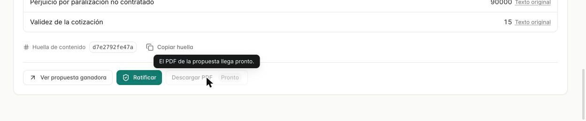
06Cómo dar feedback
Reglas simples
- Una observación por reporte. Si son tres cosas, hagan tres reportes.
- Captura de pantalla siempre, con la URL visible si se puede.
- La hora en que pasó (el formulario la llena sola) y el usuario con que estaban.
- Si es de exactitud, indiquen qué dice el PDF (página) y qué dice Radal.
- Envíen el reporte por el canal acordado con Benjamín.
Severidad
- Crítica: pierde o ensucia datos o plata, o detiene el trabajo. Ejemplo: un pago queda en la póliza equivocada.
- Alta: un flujo principal no se puede terminar, o un número sale equivocado.
- Media: funciona, pero confunde o hay que darle vueltas.
- Baja: texto, formato o detalle visual.
Tipo: Error (no hace lo que debería), Mejora (funciona, pero podría ser mejor) o Pregunta de negocio (dudan de la decisión, no del funcionamiento).
Formulario
Este formulario no envía nada: arma un texto y lo copia para que lo peguen en el canal acordado.
07Referencias y glosario
Especificación del equipo (v15) usada en esta guía
- Inicio: RADAL en una página.
- El modelo y el idioma: vocabulario y decisiones clave.
- Pantallas y reglas: Dashboard, Notificaciones, Configuración y Documentos que arma RADAL.
- Las tres vías: 12 etapas, 2a/2b, 1.15 Plan de pago y Vía Manual.
- Pólizas: la ficha y lo que falta.
- Cobranza: reloj de la cuota, C1 a C6.
- Estructura de datos: catálogo y reglas R1, R2, R4, R5, R6, R9, R14, R17, R30, R33, R34, R37, R38, R41, R42 y R43.
- Plan de construcción: P1, P3 y fases posteriores.
Para profundizar
- Explicación técnica de v12 (viajes parciales y cobranza en tres niveles, en inglés).